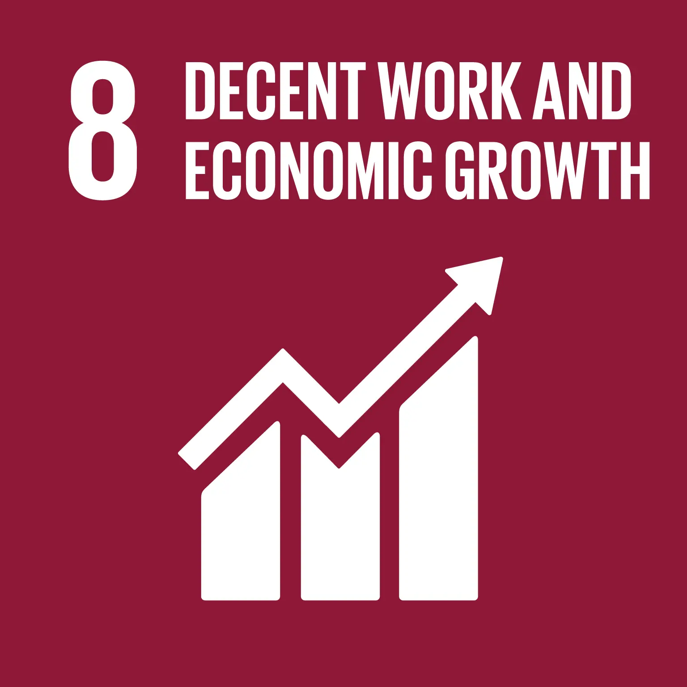

Su di me
Benvenuto nel mio sito web!
Sono felice di presentarti il mio primo progetto completo come Full Stack Developer.
Attualmente sono in formazione presso start2impact dove sto
approfondendo le tecnologie per lo sviluppo di applicazioni web.
Mi occupo di entrambe le aree, front-end e back-end, utilizzando
strumenti come HTML, CSS, JavaScript, React, Node.js.
Prima di intraprendere la carriera nello sviluppo web, ho lavorato
per tre anni nel campo della bioinformatica. Questa esperienza mi ha
permesso di sviluppare solide competenze analitiche e tecniche, che ora
applico con passione nel mondo dello sviluppo. Ho lavorato in diversi
team, anche a livello internazionale, e questa esposizione mi ha aiutato
a migliorare anche le mie capacità di collaborazione e comunicazione.
Il mio obiettivo è contribuire a progetti stimolanti e collaborativi, risolvendo problemi concreti e migliorando la vita delle persone attraverso soluzioni digitali. In particolare, desidero contribuire alla riduzione della disoccupazione giovanile e promuovere una crescita economica sostenibile ed inclusiva con condizioni di lavoro dignitose.
Percorso di formazione presso Start2impact
Start2impact è una piattaforma online dedicata alla formazione nel campo delle competenze digitali. L'ho scelta in quanto offre corsi specializzati che mi permettono di acquisire e perfezionare le competenze necessarie per diventare un Full Stack Developer. Questo percorso di apprendimento combina conoscenze teoriche e pratiche, e include anche la possibilità di ricevere preziosi feedback da professionisti esperti che revisionano i progetti. Inoltre, i progetti proposti sono ideati per avere un impatto sociale positivo, contribuendo a creare soluzioni con un reale valore e beneficio per la comunità e per il mondo in cui viviamo. Questa è la lista dei corsi per Full Stack Developer che sto frequentando:
HTML
CSS
JavaScript
TypeScript
React
Angular
Java Basics
MySQL
Node.js
Per saperne di più puoi visitare il mio Porfolio.
Il mio percorso nella bioinformatica
Il mio background in bioinformatica ha giocato un ruolo cruciale nel mio sviluppo come professionista. La bioinformatica è un ambito multidisciplinare che combina biologia, informatica e statistica per analizzare e interpretare dati biologici complessi. Questo campo si occupa di sviluppare e applicare algoritmi, strumenti e modelli computazionali per gestire e comprendere grandi volumi di dati biologici, come sequenze genetiche e proteiche, ed è essenziale per avanzare nella ricerca genomica, nella medicina personalizzata e nella scoperta di nuovi farmaci. Durante questo periodo, ho acquisito competenze avanzate nella programmazione e nell'analisi dei dati. Ho sviluppato la capacità di analizzare dati complessi e di trovare soluzioni innovative ai problemi. Questo percorso ha affinato la mia capacità di problem solving, attenzione al dettaglio e continuo apprendimento, qualità che ora applico nella progettazione e nello sviluppo di siti web. Qui una lista di alcune competenze tecniche acquisite:
R
Python
Git
Bash
VSC
Per saperne di più puoi visitare la mia pagina Linkedin o vedere il mio CV.
Visione e Obiettivi
La mia visione per il futuro è quella di continuare a crescere come sviluppatrice web, esplorando e integrando nuove tecnologie e metodologie. Sono entusiasta di combinare la mia solida formazione scientifica con le mie competenze nel settore dello sviluppo web per creare soluzioni innovative con un impatto sociale positivo. Il mio obiettivo è collaborare con aziende e team che condividono il mio entusiasmo per l'innovazione e l'impegno verso progetti significativi. Sono determinata a proseguire questo viaggio nel mondo dello sviluppo web, ad affrontare le sfide del settore tecnologico e contribuire a progetti che non solo rispondano alle sfide tecnologiche, ma che abbiano anche un valore reale e tangibile per la comunità. Grazie per aver visitato il mio sito! Spero di avere presto l'opportunità di collaborare con te!